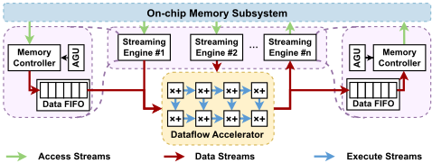
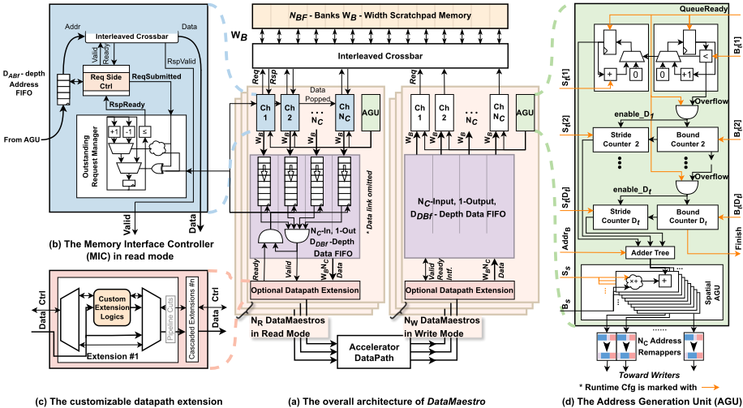
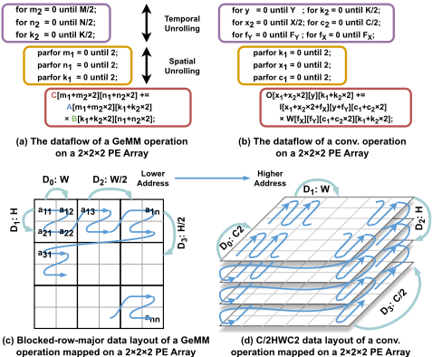
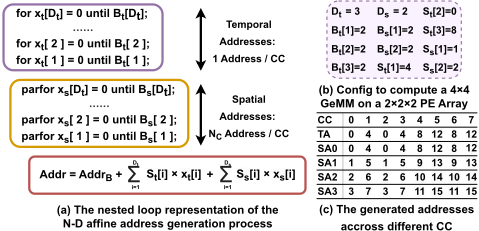
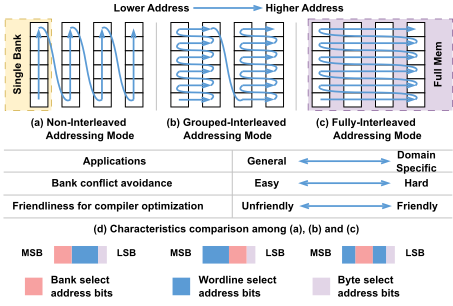
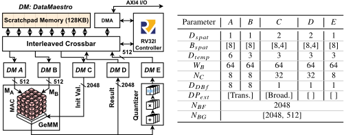
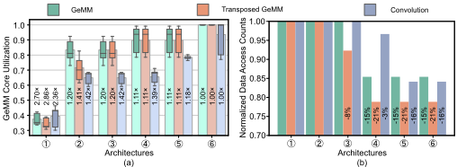
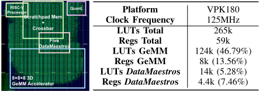
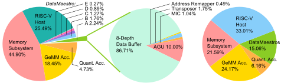
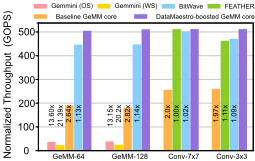

DataMaestro：一种为数据流（dataflow）加速器带来解耦访存能力的通用高效数据流引擎
DNN dataflow 加速器中，datapath 与存储层次间的数据搬运已成为性能与能耗瓶颈，现有专用数据搬运单元存在不可复用、bank 冲突拉低利用率、数据变换需额外访存三大问题。论文提出 DataMaestro，一个基于解耦访存/执行（DAE）架构的可复用数据流引擎：通过设计时/运行时可配置的 N 维仿射 AGU 生成访存模式，多通道 Memory Interface Controller 实现细粒度异步预取，用地址位排列重映射器以近零开销在 FIMA/NIMA/GIMA 三种寻址模式间运行时切换，并支持可插拔的 on-the-fly 数据变换（Transposer、Broadcaster、隐式 im2col）。作者用 Chisel 实现 RTL，将五个 DataMaestro 与 GeMM、Quantization 加速器集成进 RISC-V SoC，在 AMD Versal VPK180 FPGA 原型和 GlobalFoundries 22FDX 1GHz 综合下评估。结果显示 GeMM core 利用率接近 100%，吞吐较 Gemmini、FEATHER、BitWave 等 SotA 高 1.05–21.39×，而五个 DataMaestro 仅占系统面积 6.43%、功耗 15.06%，整套系统已开源。
DNN dataflow 加速器中，加速器 datapath 与存储层次之间的数据通信成为关键瓶颈。现有方案存在三大不足：1) 数据搬运单元是绑定特定加速器的专用硬件，访问模式与带宽固定，无法适配快速演进的多样 DNN workload 与 dataflow，跨加速器不可复用，拖累 time-to-market；2) 多 bank 片上存储的 bank 冲突是达到峰值性能的主要障碍（如 Gemmini 利用率低至 10%），即使为每个操作数配私有 buffer，同一 bank 内不同 wordline 的冲突（strided 卷积常见）依然存在，且限制 workload tiling、增加多地址空间管理复杂度；3) 排列、对齐、im2col 等操作数预处理依赖独立数据变换单元，带来额外访存、中间存储与能耗。
将解耦访存/执行（DAE）架构引入 DNN dataflow 加速器，在多 bank scratchpad 存储子系统（含交织 crossbar）与加速器 datapath 之间插入可复用数据流引擎 DataMaestro（AGU + 多通道 Memory Interface Controller + data FIFO）。关键技术：1) N 维可编程仿射 AGU，每维采用 Bound Counter + Stride Counter 双计数器结构，避免模除/乘法导致的长组合路径与硬件开销，循环维度与 bounds 设计时指定、temporal/spatial stride 运行时可编程；2) 将一个宽访存请求拆分为多个窄通道独立异步预取，ORM 跟踪 FIFO 槽位占用并对请求侧节流，最大化带宽利用；3) 提出分组交织寻址 GIMA 作为 FIMA 与 NIMA 之间的折中，利用地址位排列 + 多路选择器实现三种寻址模式的近零开销运行时切换；4) 可插拔 datapath extension（Transposer、Broadcaster、隐式 im2col）级联实现 on-the-fly 数据变换并自动插入旁路逻辑，省去独立变换单元的额外访存；5) 配套编译器根据 workload 规格与张量数据布局生成运行时配置。RTL 用 Chisel 实现。
消融实验（260 个合成 DNN workload，分 GeMM/转置 GeMM/卷积三组）：细粒度预取使 GeMM core 利用率较 baseline 提升 1.65–2.21×；Transposer 对转置 GeMM 提升 1.16× 并减少 15.86% 访存；Broadcaster 提升最高 1.09× 并减少最高 14.58% 访存；隐式 im2col 对卷积提升 1.19×；全特性版本较 baseline 最高 2.89× 加速、访存减少最高 21.15%
开启寻址模式切换后，两类 GeMM workload 利用率达 100%（跨矩阵尺寸波动极小）；卷积平均利用率 92.03%，strided 卷积层仍存在不可避免的 bank 冲突
真实网络 FPGA 评测（AMD Versal VPK180）：ResNet-18、VGG-16、ViT-Base-16、BERT-Base 的 GeMM core 利用率均高于 95%，VGG-16 与 ViT-Base-16 接近 100%
SotA 对比（归一化到 512 PE、1GHz）：较 Gemmini（OS/WS 模式）、FEATHER、BitWave 吞吐提升 1.05–21.39×
GlobalFoundries 22FDX 综合（1GHz、0.8V、严格时序收敛）：系统面积 0.61mm²、总功耗 329.4mW、系统能效 2.57 TOPS/W；五个 DataMaestro 合计仅占系统面积 6.43%、功耗 15.06%（单个 0.28%–2.33%）；DataMaestro_A 内部 data FIFO 占 87.76%、AGU 占 10%、Transposer 占 1.75%、MIC 占 1.04%、地址重映射器仅占 0.49%
与专用数据搬运单元（如 BitWave）和已有 DAE 数据流引擎（Buffet、Softbrain）相比，DataMaestro 的区别在于：以设计时+运行时双重可配置的 N 维仿射 AGU 覆盖多样 dataflow 与数据布局，实现同一数据搬运块跨加速器复用；提出并命名 GIMA 分组交织寻址作为 FIMA 与 NIMA 之间的中间模式，并将寻址模式切换转化为纯地址位排列 + 多路选择器，实现近零开销的运行时切换；把数据变换（转置、广播、隐式 im2col）以可插拔扩展内联进数据流，消除独立变换单元的额外访存与中间存储；在接近 100% PE 利用率的同时将面积/功耗开销压缩到系统整体的 6.43%/15.06%。
相关度级别：high
命中能力域：2.1 IP 架构与微架构 | 2.2 RTL 设计与实现
理由：论文本质是一个可复用数据搬运 IP（DMA/流引擎）的架构定义与 RTL 实现：命中 2.1（模块级 IP 架构、面向 PPA 的设计时参数权衡、workload-driven 评估——260 个合成 workload 加 4 个真实网络）与 2.2（可综合 RTL、1GHz 严格时序收敛的综合与功耗/面积分解）。其核心问题域——多 bank 存储子系统的 bank 冲突、interleaved/non-interleaved 地址映射及运行时切换、outstanding 请求管理、预取与带宽利用——与团队内存控制器/互连 IP 中的地址映射、bank/channel 交织、调度与预取设计高度同构；双计数器 AGU、位排列地址重映射、FIFO 槽位预留节流等微架构技巧可直接迁移。需注意其应用场景是 DNN 加速器片上 scratchpad 数据流而非 DRAM 协议或 PHY IP，属于架构模式与 RTL 实现技巧层面的直接命中，而非产品线直接对标。
建议动作：深入精读并做内部分享
arXiv:2504.14091v2 [cs.AR] 2025年9月19日
DataMaestro：一种为数据流加速器带来解耦访存的通用高效数据流引擎
Xiaoling Yi 1 ∗ , Yunhao Deng 1 ∗ , Ryan Antonio 1 , Fanchen Kong 1 , Guilherme Paim 2 , Marian Verhelst 1 1 MICAS-ESAT，鲁汶大学（KU Leuven），比利时鲁汶
2 INESC-ID，里斯本高等理工学院（Instituto Superior Técnico），里斯本大学，葡萄牙里斯本
摘要——深度神经网络（Deep Neural Networks, DNNs）在各种智能任务中取得了显著成功，但由于数据搬运瓶颈，在推理执行中面临性能与能耗方面的挑战。我们提出 DataMaestro，一种通用且高效的数据流单元，它将解耦访问/执行（decoupled access/execute）架构引入 DNN 数据流加速器以解决这一问题。DataMaestro 支持灵活且可编程的访问模式，以适应多样的工作负载类型和数据流；融合了细粒度预取与寻址模式切换，以缓解存储体冲突（bank conflict）；并支持可定制的即时（on-the-fly）数据操作，以减少内存占用和访问次数。我们将五个 DataMaestro 与一个类 Tensor Core 的通用矩阵乘（GeMM）加速器以及一个量化加速器集成到 RISC-V 主机系统中进行评估。现场可编程门阵列（FPGA）原型与超大规模集成电路（VLSI）综合结果表明，DataMaestro 帮助 GeMM 核心实现了接近 100% 的利用率，达到最先进解决方案的 1.05 - 21.39 倍，同时将面积和能耗降至仅占整个系统的 6.43% 和 15.06%。
深度神经网络（DNN）在应对复杂智能任务方面日益普及，并有望推动人类迈向通用人工智能（AGI）时代。为满足 DNN 部署对性能和能耗的严苛要求，业界已开发出众多当代领域专用数据流加速器 [2], [8]-[12]，在处理单元（PE）阵列设计和数据流策略方面融入了大量优化。然而，随着 DNN 工作负载和 PE 阵列规模的持续扩大，加速器数据通路与存储层次结构之间的数据通信已成为 DNN 数据流加速器的关键瓶颈 [4], [13]-[17]。
尽管已有多种解决方案被提出以应对这一瓶颈，但三个缺点阻碍了它们向高效 DNN 数据流加速器的广泛部署：1）不可复用的设计。数据搬运单元通常被实现为专用硬件模块，与特定加速器紧密耦合，具有固定的访问模式以及针对特定工作负载调优的带宽 [2]-[4], [7], [8]。鉴于 DNN 工作负载在规模和拓扑上的多样性及其快速演进，这些专用数据搬运单元缺乏适应不同数据流需求的通用性，导致整体系统性能和能效未达最优。例如，BitWave [2] 通过专门的优化在卷积神经网络（CNN）的卷积运算中实现了非常高的 PE 阵列利用率，但在 Transformer 模型中普遍存在的通用矩阵乘（GeMM）方面表现不佳。此外，这些专用数据搬运模块无法在不同加速器之间复用，造成冗余的工程投入，并阻碍了具有竞争力的上市时间，尤其是考虑到 DNN 和下一代计算平台的快速演进。2）由 bank 冲突导致的性能下降。片上存储器 bank 冲突难题是实现系统峰值性能的主要障碍。例如，Gemmini [1] 由于在访问不同操作数时缺乏 bank 冲突管理，PE 阵列利用率低至 10%。为解决这一问题，许多加速器 [2], [9], [18], [19] 为每个操作数采用专用的片上存储器，例如专用的输入、权重和输出缓冲区。
*同等贡献。
然而，当单个周期所需的数据存储在同一存储体（bank）内的不同字线（wordline）上时，仍会出现存储体冲突，这种情况在跨步卷积操作中十分常见。此外，它还对工作负载的分块（tiling）施加了额外限制以满足最小存储器的需求，并引入了管理多个地址空间的额外复杂性 [16]。3). 昂贵的数据操作。许多加速器在计算前需要对操作数进行预处理，包括置换（permutation）、数据对齐和 im2col。一种常见做法是设计独立的数据操作单元来执行这些数据重排操作 [1], [10], [12]。这些单元需要额外的存储器访问和中间数据存储，这再次增加了存储器冲突的可能性，并推高了存储器能耗。总而言之，目前缺乏一种通用且高效的数据搬运解决方案，既能满足不同加速器多样化的数据流和数据操作需求，又能保证高系统性能。
解耦访问/执行（decoupled access/execute, DAE）架构 [20] 将数据访问和计算过程分离为两个独立的流，以避免相互停顿。这一方法已被众多工作采用 [5], [21], [22]，在线性代数工作负载上展现出 2 - 5 × 的性能加速 [5], [21]。DAE 架构非常适合深度神经网络（DNN）工作负载，因为其规则的多维访问模式 [23] 使数据能够在计算之前被预先获取。这从处理单元（PE）阵列的角度促进了数据流的连续消费与生产，帮助加速器系统达到其理论峰值性能。已有工作 [7], [8] 成功地将 DAE 架构应用于加速器设计中。然而，它们无法满足 DNN 工作负载多样化的数据流、数据访问模式和高带宽需求以及前述挑战，因此对于 DNN 数据流加速器而言并非最优。
本文提出了一种通用且高效的数据流引擎，称为 DataMaestro 1，它为 DNN 数据流加速器带来了解耦的存储器访问。DataMaestro 经过高度优化，可在不同数据流加速器之间复用，支持灵活且可编程的访问模式，同时实现接近 100% 的 PE 阵列利用率。表 I 中列出了 DataMaestro 与最先进（SotA）解决方案的全面比较。综上所述，我们的主要贡献在于：
1 DataMaestro 以及由 DataMaestro 加速的加速器系统已开源于：https://github.com/KULeuven-MICAS/snax cluster。
| Gemmini [1] | BitWave [2] | [3] | FEATHER [4] | SSR [5] | HWPE [6] | Buffet [7] | Softbrain [8] | DataMaestro | |
|---|---|---|---|---|---|---|---|---|---|
| Open source | ✓ | ✗ | ✗ | ✓ | ✓ | ✓ | ✓ | ✗ | ✓ |
| Reusable design | ✗ | ✗ | ✗ | ✗ | ✗ | ✓ | ✓ | ✗ | ✓ |
| Decoupled access/execute | ✗ | ✗ | ✗ | ✗ | ✓ | ✓ | ✓ | ✓ | ✓ |
| Programmable affine access | ✓ ( 2 - 𝐷 ) | ✗ | ✓ ( 2 - 𝐷 ) | ✗ | ✓ ( 4 - 𝐷 ) | ✓ ( 3 - 𝐷 ) | ✓ ( 2 - 𝐷 ) | ✓ ( 2 - 𝐷 ) | ✓ ( 𝑁 - 𝐷 ) |
| Fine-grained prefetch | ✗ | ✗ | ✗ | ✗ | ✗ | ✓ | ✗ | ✗ | ✓ |
| Runtime addressing mode switching | ✗ | ✗ | ✗ | ✗ | ✗ | ✗ | ✗ | ✗ | ✓ |
| On-the-fly data manipulation | ✗ | ✗ | ✗ | ✓ | ✗ | ✗ | ✗ | ✗ | ✓ |
| | Gemmini [1] | BitWave [2] | [3] | FEATHER [4] | SSR [5] | HWPE [6] | Buffet [7] | Softbrain [8] | DataMaestro |
典型的深度神经网络（DNN）算子，例如 GeMM、多头注意力、卷积和池化，都可以表示为在输入、权重和输出张量维度上进行迭代的嵌套循环。数据流优化，例如对这些循环进行拆分和重排，为高效的硬件处理开辟了广阔的映射空间 [15], [16]。具体而言，这些优化包括用于并行执行的空间展开（SU），以及用于控制数据分块和循环迭代顺序的时间展开（TU）。
数据访问模式规定了加速器在每个时钟周期所需的数据，其本质上由数据流决定。然而，数据布局，即张量数据在存储器中的组织方式，也会影响数据访问模式。合适的数据布局对于优化 DNN 性能至关重要，因为它直接影响存储器访问效率，并且若与数据流不匹配，可能导致 PE 阵列利用率不足 [4], [25]。
解耦访问/执行（Decoupled Access/Execute, DAE）架构 [7], [8], [20] 通过在存储器访问与计算之间引入数据流引擎，显式地将二者解耦，如图 1 所示。该架构集成了三个关键组件——存储器子系统、数据流引擎和加速器数据通路——它们协同工作，以产生/消费三种类型的流：访问流（access stream）、数据流（data stream）和执行流（execute stream）。存储器子系统充当数据储库，通过访问流响应存储器请求。加速器的数据通路对数据流施加计算，并通过执行流产生结果。数据流引擎在存储器子系统与加速器数据通路之间架起桥梁，协调二者之间的数据流动。它通过访问流与存储器交互，将存储器中以特定格式（数据布局）组织的分散数据，转换为按加速器所需格式（数据流）组织的连续数据流，反之亦然。
通常，流引擎由三个主要组件构成：地址生成单元（Address Generation Unit, AGU）、存储器接口控制器和数据 FIFO。AGU 生成地址序列，随后由存储器接口控制器消费这些序列以执行存储器操作。数据 FIFO 临时存储数据流，从而将存储器访问与计算解耦。这种解耦使得数据预取操作成为可能，从而最大限度地减少由存储器停顿导致的计算中断。由于 DNN 工作负载具有规则且确定性的数据访问模式，这种方法对其尤为有利。通过采用该架构，加速器系统内部建立起访问流-数据流-执行流的和谐编排。在下一节中，我们将介绍 DataMaestro，这是一款专为 DNN 加速器设计的高度优化的数据流引擎，它能够高效地梳理数据流，从而提升数据流加速器的性能。

在本节中，我们将首先在 § III-A 中对 DataMaestro 架构进行概述，并介绍其所有可配置参数，这些参数列于表 II 中。接下来，我们介绍三项新颖的架构特性，它们能够在广泛的工作负载范围内最大化 DataMaestro 的效率并最小化存储体冲突：1）高度可配置且面积高效的 N 维（N-D）地址生成单元（§ III-B）；2）细粒度预取（§ III-C）；以及 3）运行时可配置的寻址模式切换（§ III-D）。最后，我们讨论 DataMaestro 的数据通路扩展接口，该接口支持定制化的即时数据操作（§ III-E）。DataMaestro 的这些独特特性是其实现高效率以及提升 DNN 数据流加速器性能的关键所在。
Figure 2 (a) illustrates a scenario where 𝑁 𝑅 + 𝑁 𝑊 DataMaestro s are connected to a multi-banked scratchpad memory subsystem (top) and an accelerator (bottom), effectively managing data streams between them to create a complete accelerator system. One read DataMaestro (middle, left) and one write DataMaestro (middle, right) are depicted in detail. The memory subsystem consists of an 𝑁 𝐵 - banked scratchpad memory that provides high memory bandwidth, along with an interleaved crossbar that ensures full accessibility from any request port. To meet the specific requirements of different accelerator ports, 𝑁 𝑅 read and 𝑁 𝑊 write DataMaestro s are deployed, each of which can be configured independently at both design time and runtime, by providing the parameters listed in Table II.
A read or write DataMaestro primarily includes 𝑁 𝐶 independent memory interaction channels, breaking one wide memory request into multiple narrower operations for asynchronous, fine-grained memory B. Programmable Affine Access Pattern by Address Generation Unit access. Each channel is equipped with a dedicated Memory Interface Controller (MIC) (Figure 2 (b)) and a data FIFO. The MIC consumes addresses from the address generation unit (AGU) (Figure 2 (d)) to issue memory requests, and the data FIFO acts as a buffer between the DataMaestro and the accelerator. This facilitates a decoupled access/execute architecture for dataflow accelerators to effectively hide memory latency. At the output ports of the FIFOs, data fetched by multiple channels are gathered into a wide data stream and sent as a single wide data word to the accelerator datapath, enabling highly paralleled execution. Furthermore, at the interface between the DataMaestro and the accelerator (Figure 2 (c)), multiple usercustomizable datapath extensions can optionally be inserted to perform on-the-fly data processing in a cascaded manner without requiring intermediate memory storage. In the following subsections, we will delve into each part of DataMaestro in more detail.

| Scope | Parameter | Description | Type † |
|---|---|---|---|
| Design Time | 𝑁 𝑅 𝑁 𝑊 𝑀𝑜𝑑𝑒 𝑅 / 𝑊 𝐵 𝑠 𝐷 𝑠 𝐷 𝑡 𝑁 𝐶 𝐷 𝐴𝐵𝑓 𝐷 𝐷𝐵𝑓 𝐷𝑃 𝑒𝑥𝑡 𝑊 𝐵 𝑁 𝐵𝐹 𝑁 𝐵𝐺 | Num. of read DataMaestro Num. of write DataMaestro Read or Write mode Spatial Bounds Num. of Spatial Dimensions Num. of Temporal Dimensions Num. of Channels Address Buffer Depth Data Buffer Depth Datapath Extensions Bank Width Num. of Bank in Full Memory Num. of Bank in One Group | Int Int Bool. [Int] Int Int Int Int Int [Ext.] Int Int [Int] |
| Run Time | 𝐴𝑑𝑑𝑟 𝐵 𝑆 𝑠 𝐵 𝑡 𝑆 𝑡 𝑅 𝑆 | Base Address Spatial Strides Temporal Bounds Temporal Strides Addressing Mode Selection | UInt [UInt] [UInt] [UInt] UInt |
| Scope | Parameter | Description | Type † |
直接使用单个计数器来跟踪地址生成进度，需要取模单元和除法器来计算循环索引，随后还需乘法器和加法器来计算时间地址。然而，这会导致组合逻辑路径过长，且硬件开销随维度数量线性增长。在 DataMaestro 中，我们引入了微架构优化，以低开销和更短的组合逻辑路径实现高维地址生成。如图 2 (d) 顶部所示，时间地址生成单元（AGU）的每个维度均采用双计数器结构实现，包括一个用于记录循环索引的简单计数器（Bound Counter），以及一个用于生成时间地址偏移量的步长可编程计数器（Stride Counter）。随后，所有维度的地址偏移量与基址（𝐴𝑑𝑑𝑟 𝐵）相加，并由多通道空间 AGU（图 2 (d) 底部）消费，该 AGU 为每个通道生成不同的地址。基于这一优化的硬件架构，DataMaestro 支持在设计时指定任意的时间地址循环维度、空间地址循环维度以及空间地址循环边界，而时间地址和空间地址的步长均可在运行时编程设定，从而为适应 DNN 数据流加速器中多样化的数据访问模式提供了充分的灵活性。


DataMaestro 通过将一个宽的存储器请求拆分为多个更窄的通道并独立发出，来实现细粒度预取。在此过程中，处于读模式的存储器接口控制器（Memory Interface Controller, MIC）在发送细粒度请求、汇集响应数据并将其存入数据 FIFO 方面发挥着关键作用。如图 2(b) 所示，处于读模式的 MIC 包含一个未完成请求管理器（Outstanding Request Manager, ORM）和一个请求侧控制器（Request Side Controller, RSC）。该 ORM

(e) 地址重映射器中的地址置换策略
跟踪数据 FIFO 的利用率，并为在途存储器请求预留 FIFO 槽位；当 FIFO 中没有可预留的可用槽位时，便对 RSC 进行限流。在获得 ORM 的许可以及来自 AGU 的有效地址后，RSC 会立即发出新的存储器请求。这种激进且细粒度的数据预取机制最大限度地提高了存储器带宽利用率。
计算机系统中访问多 bank 存储器时通常采用两种寻址模式：全交织存储器寻址（Fully-Interleaved Memory Addressing, FIMA），其地址在所有 bank 之间交织分布（图 5(a)）；以及非交织存储器寻址（Non-Interleaved Memory Addressing, NIMA），其连续地址被分配到单个 bank（图 5(c)）。介于这两者之间还存在一种中间模式，我们将其称为分组交织存储器寻址（GroupedInterleaved Memory Addressing, GIMA），其中若干 bank 被划分为组，地址在组内交织、在组间保持连续（图 5(b)）。这三种寻址模式的特性总结于图 5(d) 中。尽管 FIMA 在通用计算系统中被广泛采用 [29]，但在领域专用加速器（domain-specific accelerator, DSA）系统中它更容易发生 bank 冲突。因此，当代数据流加速器往往更倾向于采用 NIMA 模式 [1]-[3]。然而，编译器需要精心分配数据以获得最大性能，并且这约束了工作负载的分块（tiling）方式，以满足最小的存储器需求。GIMA 介于这两者之间，在二者之间取得了折中。为了适应多样的 DNN 工作负载和数据流加速器，DataMaestro 被设计为支持全部三种寻址模式，并具备在运行时于各模式之间切换的能力，为设计者提供了优化数据分配的额外自由度。
寻址模式切换的主要挑战在于地址译码所引入的开销。然而，当一组内的 bank 数量为 2 的幂时，寻址模式切换可以表示为地址的简单位置换。基于这一洞察，DataMaestro 采用了一个存储器地址重映射器，通过简单的地址位置换来实现寻址模式切换，如图 5(e) 所示。DataMaestro 在设计时根据 bank 总数（ 𝑁 𝐵𝐹 ）和一组内的 bank 数量（ 𝑁 𝐵𝐺 ）在硬件中实例化这些位置换。随后，置换后的地址被连接到一个多路选择器，用户可以通过在运行时设置 𝑅 𝑆 来选择寻址模式。
DataMaestro 提供了一种机制，能够以即插即用的方式在 DataMaestro 与加速器数据通路之间插入可定制的扩展模块（例如数据量化和置换），以实现即时数据操作，如图 2(c) 所示。数据通路扩展根据设计时配置 𝐷𝑃 𝑒𝑥𝑡 进行实例化，前一个扩展的输出作为下一个扩展的输入。此外，系统会自动插入用于旁路任意扩展的逻辑，使用户能够在运行时禁用任意扩展。
| 0 | 1 | 2 | 3 | 4 | 5 |
|---|---|---|---|---|---|
| Parameter | 𝐴 | 𝐵 | 𝐶 | 𝐷 | 𝐸 |
| 𝐷 𝑠𝑝𝑎𝑡 | 1 | 1 | 2 | 2 | 1 |
| 𝐵 𝑠𝑝𝑎𝑡 | [8] | [8] | [8,4] | [8,4] | [8] |
| 𝐷 𝑡𝑒𝑚𝑝 | 6 | 3 | 3 | 3 | 3 |
| 𝑊 𝐵 | 64 | 64 | 64 | 64 | 64 |
| 𝑁 𝐶 | 8 | 8 | 32 | 32 | 8 |
| 𝐷 𝐷𝐵𝑓 | 8 | 8 | 1 | 1 | 1 |
| 𝐷𝑃 𝑒𝑥𝑡 | [Trans.] | [Trans.] | [Broad.] | [ ] | [ ] |
| 𝑁 𝐵𝐹 | 2048 | 2048 | 2048 | 2048 | 2048 |
| 𝑁 𝐵𝐺 | [2048, 512] | [2048, 512] | [2048, 512] | [2048, 512] | [2048, 512] |
| 0 | 1 | 2 | 3 | 4 | 5 |

1) 工作负载与评估架构设置：我们开展了一项消融研究，使用 260 种不同的合成深度神经网络（DNN）工作负载来评估 DataMaestro 中每项创新的有效性，这些工作负载被分为三组：1) 通用矩阵乘法（GeMM），2) 转置 GeMM，以及 3) 卷积。该合成基准测试集涵盖了用于 GeMM 和转置 GeMM 的多种矩阵尺寸，以及用于卷积的多种特征图尺寸、通道数、卷积核尺寸和步长，能够有效代表典型的 Transformer 和卷积神经网络（CNN）层。首先，我们在加速器系统中禁用各 DataMaestro 的全部特性——此时其在架构上类似于普通的数据搬运单元——以此作为基线（ ① ）。随后，我们逐步引入每一项特性，最终构成一个配备全功能 DataMaestro 的加速器系统（ ② 至 ⑥ ）。

2) 结果分析：图 7 (a) 以箱线图形式展示了每个深度神经网络（DNN）算子组的通用矩阵乘法（GeMM）核心利用率分布，并在随附的柱状图中描绘了各组内部的平均利用率。结果表明，得益于细粒度异步预取，② 在所有工作负载上的 GeMM 核心利用率均显著提升，比基线 ① 高出 1.65× 至 2.21×。在所有特性中，Transposer 对转置 GeMM 工作负载尤为有效（③ 相比于 ②），可将利用率提升 1.16×；而 Broadcaster 可将所有工作负载的利用率提升至多 1.09×（④ 相比于 ③）。隐式 im2col [31] 变换进一步为卷积工作负载带来了 1.19× 的利用率提升（⑤ 相比于 ④）。最后，借助寻址模式切换（⑥），两个 GeMM 工作负载的利用率达到 100%，且在所有矩阵规模下的变化极小。对于卷积工作负载，平均利用率达到 92.03%，但其利用率分布在不同工作负载规模之间表现出明显差异。经进一步分析，这种波动归因于跨步卷积层，此类层需要在更宽的地址范围内获取非连续的输入数据，从而导致不可避免的 bank 冲突。幸运的是，跨步卷积层通常用于特征图下采样，仅占真实世界 DNN 工作负载的一小部分，因此影响有限，如 § IV-C2 所示。同时，用于即时数据操作的数据通路扩展显著减少了冗余的存储器访问，缓解了 bank 冲突并节省了能耗。如图 7 (b) 所示，Transposer 将转置 GeMM 工作负载的数据访问次数减少了 15.86%（③ 相比于 ②），而 Broadcaster 在所有三个工作负载上有效减少了至多 14.58% 的存储器访问（④ 相比于 ③）。总体而言，与基线（①）相比，具备全部特性的 DataMaestro（⑥）在所有测试用例上实现了高达 2.89× 的性能加速和高达 21.15% 的存储器访问减少。这些结果凸显了 DataMaestro 能够面向各种不同规模的 DNN 算子，为加速器提供多样化且高效的数据流。
1) 评估设置：我们将 DataMaestro 评估系统集成到一个源自 [33] 的定制化 SoC 平台中，并在 AMD Versal ™ VPK180 FPGA 上进行原型实现，从而支持
| Platform Clock Frequency | VPK180 125MHz |
|---|---|
| LUTs Total Regs Total LUTs GeMM Regs GeMM DataMaestro DataMaestro | 265k 59k (46.79%) 8k (13.56%) 14k (5.28%) |
| 124k | |
| LUTs s | |
| Regs s | 4.4k (7.46%) |
| Platform Clock Frequency | VPK180 125MHz |


(b) DataMaestro A 面积分解
(c) 系统功耗分解
快速便捷的真实 DNN 评估。我们系统的带标注版图与资源利用率如图 8 所示。2) DNN 性能基准测试：我们在 FPGA SoC 系统上对 ResNet-18 [34]、VGG-16 [35]、ViT-Base-16 [36] 和 BERT-Base [37] 进行基准测试，GeMM 核心利用率列于表 III 中。所有四个网络均达到 95% 以上的利用率，其中 VGG16 和 ViT-Base-16 接近 100%。在这些真实 DNN 工作负载上如此高的 GeMM 核心利用率凸显了 DataMaestro 在最小化数据流中断方面的有效性，从而提升了加速器系统的性能。
| ResNet-18 | VGG-16 | ViT-B-16 | BERT-Base | |
|---|---|---|---|---|
| Type | CNN | CNN | Transformer | Transformer |
| Utilization (%) † | 95.45 | 100.00 | 99.98 | 97.85 |
| | ResNet-18 | VGG-16 | ViT-B-16 | BERT-Base |
[ † ] 利用率的计算方式为：无存储器停顿的理论计算周期数与 DataMaestro 活跃周期数之比。
采用 22nm FDX 工艺综合后，我们的系统占用 0.61 𝑚𝑚² 的单元面积，在 1 GHz 频率下执行 𝑀 = 𝑁 = 𝐾 = 64 的 GeMM（GeMM-64）工作负载时总功耗为 329.4 𝑚𝑊，实现了 2.57 TOPS/W 的系统级总能量效率。详细的系统面积与功耗分解如图 9 (a) 和 (c) 所示，重点展示了五个主要组件：GeMM 加速器、量化（Quantization）加速器、五个 DataMaestro、暂存存储器（scratchpad memory）子系统以及 RISC-V 主机。前四个组件构成加速器系统的核心，占总面积的 74.52%，并消耗总功耗的 66.99%。五个 DataMaestro 总共仅占系统面积的 6.43% 和总功耗的 15.06%，其中单个实例的面积占用介于 0.28% 至 2.33% 之间。面积占用的差异表明，DataMaestro 的设计期参数会改变所部署的硬件，以满足每条数据流的特定需求，彰显了其高度的多功能性。此外，为了研究 DataMaestro 内部各功能特性的开销，我们对单个 DataMaestro 𝐴（五个实例中最先进的一个）的面积构成进行了详细分析，如图 9 (b) 所示。大部分面积由数据 FIFO（87.76%）和 MIC（1.04%）占用，用于支持解耦的细粒度预取。负责生成 6-𝐷 时间地址和 2-𝐷 空间地址的地址生成单元（AGU）占总面积的 10%。转置器（Transposer）占总面积的 1.75%。最后，地址重映射器（address remapper）本质上是置换地址位的多路选择器，仅占 0.49% 的面积，几乎可以忽略不计。

| Area | Power | |
|---|---|---|
| Buffet [7] | 2% | 14% |
| Softbrain [8] | 4 . 3% | 15 . 3% |
| Bitwave [2] | 11 . 9% | 25 . 5% |
| FEATHER [4] | 8 . 9% | N/A |
| DataMaestro | 6.43% | 15.06% |
| | Area | Power |
1) 与最先进（SotA）深度神经网络（DNN）数据流加速器的比较：我们使用具有代表性的 DNN 内核，将经 DataMaestro 增强的加速器的吞吐量与 SotA DNN 数据流加速器进行比较，其中包括以输出固定（OS）和权重固定（WS）模式运行的 Gemmini [1]、[38]、FEATHER [4] 以及 BitWave [2]。为了公平比较，所有系统的吞吐量均归一化到相同的加速器处理单元（PE）数量（512）和时钟频率（1 GHz）。如图 10（左）所示，在各种不同的 DNN 内核上，与 SotA 加速器相比，我们经 DataMaestro 增强的加速器获得了 1.05× 至 21.39× 的吞吐量提升。这一显著的性能提升源于 DataMaestro 的设计时与运行时灵活性、细粒度预取以及寻址模式切换技术的共同作用。
2) 与 SotA 数据流引擎的比较：我们进一步将 Buffet [7] 和 Softbrain [8] 中的数据流引擎，以及 BitWave [2] 和 FEATHER [4] 中的数据搬运单元与 DataMaestro 进行比较，并在图 10（右）中总结了它们的面积与功耗开销结果。在我们的评估系统中，五个 DataMaestro 总共占用系统面积的 5% 和系统功耗的 15.58%，与 SotA 方案相比具有竞争力，同时能够灵活高效地流式传输数据，从而提升数据流加速器的性能。
本文提出了 DataMaestro——一个多功能、高效且开源的数据流式传输单元，它将解耦访问/执行架构引入 DNN 数据流加速器。DataMaestro 支持可编程的 𝑁 维访问模式，以适应多样的负载类型与数据流；引入细粒度预取与寻址模式切换来缓解 bank 冲突；并支持可定制的即时数据操作，以减少内存占用与访存次数。我们将五个 DataMaestro 与一个类 Tensor Core 的 GeMM 加速器以及一个量化加速器集成到 RISC-V 主机系统中。FPGA 原型验证与 VLSI 综合结果表明，DataMaestro 帮助加速器达到接近 100% 的利用率，相比 SotA 方案提升了 1.05–21.39 倍，而其面积与能耗开销仅分别占整个系统的 6.43% 和 15.06%。